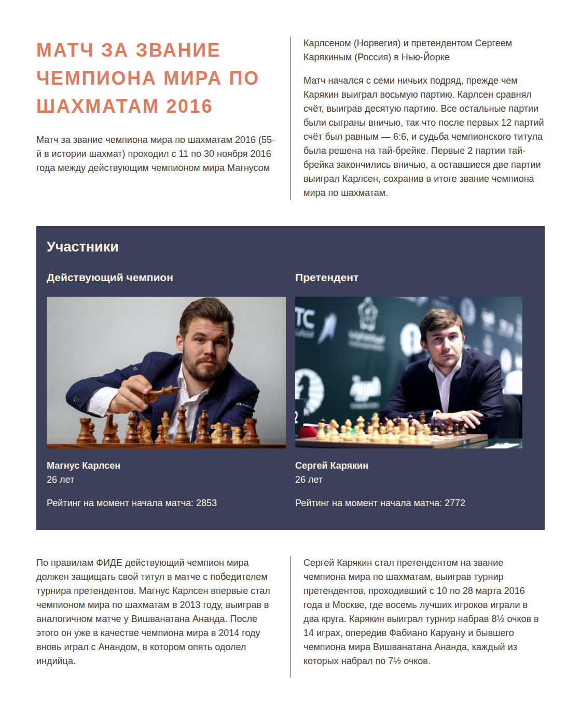

Конец осени 2016 года ознаменовался упорным матчем за звание чемпиона мира по шахматам между норвежцем Магнусом Карлсеном и россиянином Сергеем Карякиным. Напряжённое сражение на протяжении 20 дней навсегда останется в истории. В этом задании вам нужно сверстать превью осеннего матча и представить соперников.
Финальный макет выглядит следующим образом:

Сверстайте и дополните необходимые стили для макета. Используйте изученные свойства модуля CSS Columns.
index.html
Вступительный текст
Заголовок первого уровня: Матч за звание чемпиона мира по шахматам 2016
Описание матча:
Матч за звание чемпиона мира по шахматам 2016 (55-й в истории шахмат) проходил с 11 по 30 ноября 2016 года между действующим чемпионом мира Магнусом Карлсеном (Норвегия) и претендентом Сергеем Карякиным (Россия) в Нью-Йорке.
Матч начался с семи ничьих подряд, прежде чем Карякин выиграл восьмую партию. Карлсен сравнял счёт, выиграв десятую партию. Все остальные партии были сыграны вничью, так что после первых 12 партий счёт был равным — 6:6, и судьба чемпионского титула была решена на тай-брейке. Первые 2 партии тай-брейка закончились вничью, а оставшиеся две партии выиграл Карлсен, сохранив в итоге звание чемпиона мира по шахматам.
Блок претендентов
Вся необходимая вёрстка уже есть внутри файла.
Последний текст
По правилам ФИДЕ действующий чемпион мира должен защищать свой титул в матче с победителем турнира претендентов. Магнус Карлсен впервые стал чемпионом мира по шахматам в 2013 году, выиграв в аналогичном матче у Вишванатана Ананда. После этого он уже в качестве чемпиона мира в 2014 году вновь играл с Анандом, в котором опять одолел индийца.
Сергей Карякин стал претендентом на звание чемпиона мира по шахматам, выиграв турнир претендентов, проходивший с 10 по 28 марта 2016 года в Москве, где восемь лучших игроков играли в два круга. Карякин выиграл турнир набрав 8½ очков в 14 играх, опередив Фабиано Каруану и бывшего чемпиона мира Вишванатана Ананда, каждый из которых набрал по 7½ очков.
app.css
- Секция
.articleделит текст на две колонки с отступом в 50 пикселей. Между колонками создайте вертикальную границу шириной 1 пиксель и цветом#3d405b - Секция
.applicantsтак же делит элементы на две колонки. Сама секция занимает все доступные колонки (разбивает родительскую колонку по горизонтали). Заголовок внутри секции так же располагается на всю ширину блока.
Подсказки
- Вся вёрстка содержится внутри одного элемента
<article>. Создавать дополнительные обёртки<article>для текста не надо. Текст оберните в параграфы